’Variance components and the response to selection
Last updated: 2022-06-01
Checks: 7 0
Knit directory: DGRP_sexual_conflict/
This reproducible R Markdown analysis was created with workflowr (version 1.7.0). The Checks tab describes the reproducibility checks that were applied when the results were created. The Past versions tab lists the development history.
Great! Since the R Markdown file has been committed to the Git repository, you know the exact version of the code that produced these results.
Great job! The global environment was empty. Objects defined in the global environment can affect the analysis in your R Markdown file in unknown ways. For reproduciblity it’s best to always run the code in an empty environment.
The command set.seed(20210706) was run prior to running the code in the R Markdown file. Setting a seed ensures that any results that rely on randomness, e.g. subsampling or permutations, are reproducible.
Great job! Recording the operating system, R version, and package versions is critical for reproducibility.
Nice! There were no cached chunks for this analysis, so you can be confident that you successfully produced the results during this run.
Great job! Using relative paths to the files within your workflowr project makes it easier to run your code on other machines.
Great! You are using Git for version control. Tracking code development and connecting the code version to the results is critical for reproducibility.
The results in this page were generated with repository version a4076aa. See the Past versions tab to see a history of the changes made to the R Markdown and HTML files.
Note that you need to be careful to ensure that all relevant files for the analysis have been committed to Git prior to generating the results (you can use wflow_publish or wflow_git_commit). workflowr only checks the R Markdown file, but you know if there are other scripts or data files that it depends on. Below is the status of the Git repository when the results were generated:
Ignored files:
Ignored: .DS_Store
Ignored: .Rhistory
Ignored: .Rproj.user/
Ignored: code/.DS_Store
Ignored: gwas_data/
Untracked files:
Untracked: %
Untracked: -Toms-laptop.Rhistory
Untracked: Manuscript/
Untracked: Reported_heritability.xlsx
Untracked: Rplot.pdf
Untracked: S_plots.pdf
Untracked: Selection_differential_plot.pdf
Untracked: Selection_differentials.pdf
Untracked: Selection_differentials_f.pdf
Untracked: Selection_differentials_m.pdf
Untracked: analysis/Random_plots.R
Untracked: code/LICENSE
Untracked: code/gcta64
Untracked: code/prettify
Untracked: code/toy.map
Untracked: code/toy.ped
Untracked: data/SNP_heritability.csv
Untracked: data/SNP_heritability_cleaned.csv
Untracked: data/SNP_selection.csv
Untracked: data/S_female.csv
Untracked: data/all_SNP_data.csv
Untracked: data/rfm_dimorphism_model.rds
Untracked: dimorphism_subset.pdf
Untracked: fitness_variation.pdf
Untracked: fits/
Untracked: lifetime_fecundity_S.pdf
Untracked: mating_latency_S.pdf
Unstaged changes:
Modified: .Rprofile
Modified: .gitattributes
Modified: .gitignore
Modified: DGRP_sexual_conflict.Rproj
Modified: README.md
Modified: _workflowr.yml
Modified: analysis/SNP_correlations.Rmd
Modified: analysis/_site.yml
Modified: analysis/license.Rmd
Modified: analysis/process_mashr.Rmd
Modified: analysis/run_GWAS.Rmd
Modified: analysis/run_mashr.Rmd
Modified: code/README.md
Modified: code/run_mashr.R
Modified: data/README.md
Modified: data/S_male.csv
Modified: data/all.dgrp.phenos_unscaled.csv
Modified: data/rfm.complete.csv
Modified: output/README.md
Note that any generated files, e.g. HTML, png, CSS, etc., are not included in this status report because it is ok for generated content to have uncommitted changes.
These are the previous versions of the repository in which changes were made to the R Markdown (analysis/GCTA_results.Rmd) and HTML (docs/GCTA_results.html) files. If you’ve configured a remote Git repository (see ?wflow_git_remote), click on the hyperlinks in the table below to view the files as they were in that past version.
| File | Version | Author | Date | Message |
|---|---|---|---|---|
| Rmd | a4076aa | ausevo | 2022-06-01 | adding analysis |
| html | 8d22c48 | ausevo | 2022-05-16 | Build site. |
| Rmd | 30bb336 | ausevo | 2022-05-16 | creating a more readable doc |
Load packages and results from the GCTA models
library(tidyverse)
library(glue)
library(kableExtra)
library(DT)
library(MetBrewer)
library(patchwork)
library(rcartocolor)
library(ggbeeswarm)
library(brms)
library(tidybayes)
SNP_heritability <- read_csv("data/SNP_heritability.csv")
SNP_selection_response_estimates <- read_csv("data/SNP_selection.csv")Which traits are responding to selection?
selection_female_plot <-
SNP_selection_response_estimates %>%
filter(Fitness_sex == "Female",
`Variance_C(G)_tr12` < 1 & `Variance_C(G)_tr12` > -1,
Reference != "Jin et al (2020) PLOS Genetics" &
Reference != "Everett et al (2020) Genome Research" &
Reference != "Dembeck et al (2015) eLife") %>%
mutate(Trait = fct_reorder(Trait, `Variance_C(G)_tr12`)) %>%
ggplot(aes(x = `Variance_C(G)_tr12`, y = Trait, xmin = `Variance_C(G)_tr12` - `SE_C(G)_tr12`, xmax = `Variance_C(G)_tr12` + `SE_C(G)_tr12`)) +
geom_pointinterval(aes(fill = `Variance_C(G)_tr12`), shape = 21, point_size = 1.5, stroke = 1) +
scale_fill_gradientn(colors=met.brewer(direction = -1, "Hiroshige"), guide = "none") +
geom_vline(xintercept = 0, linetype = 2) +
labs(x = expression(paste("SNP covariance between fitness and trait ", (R[z]))),
title = "Females") +
theme_minimal()
selection_male_plot <-
SNP_selection_response_estimates %>%
filter(Fitness_sex == "Male",
`Variance_C(G)_tr12` < 1 & `Variance_C(G)_tr12` > -1,
Reference != "Jin et al (2020) PLOS Genetics" &
Reference != "Everett et al (2020) Genome Research" &
Reference != "Dembeck et al (2015) eLife") %>%
mutate(Trait = fct_reorder(Trait, `Variance_C(G)_tr12`)) %>%
ggplot(aes(x = `Variance_C(G)_tr12`, y = Trait, xmin = `Variance_C(G)_tr12` - `SE_C(G)_tr12`, xmax = `Variance_C(G)_tr12` + `SE_C(G)_tr12`)) +
geom_pointinterval(aes(fill = `Variance_C(G)_tr12`), shape = 21, point_size = 1.5, stroke = 1) +
scale_fill_gradientn(colors=met.brewer(direction = -1, "Hiroshige"), guide = "none") +
geom_vline(xintercept = 0, linetype = 2) +
labs(x = expression(paste("SNP covariance between fitness and trait ", (R[z]))),
title = "Males") +
theme_minimal()
selection_female_plot + selection_male_plot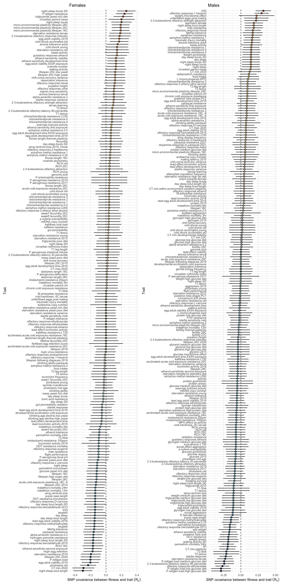
Figure X: Results from the bivariate GREML models run in GCTA. We use these models to estimate the genetic covariance between a given trait and fitness, which is the response to selection. Data are mean point estimates of covariance with standard errors. Note that 1) we have not corrected for multiple testing and 2) I don’t know what the units are here / how to interpret them as a selection response and 3) only a subset of the traits analysed are displayed in this plot
Is the response to selection greater in males than it is in females across traits?
Meta-analysis
Should I only consider traits measured in both sexes?
We need to find an appropriate distribution to model these data
met_selection_data <-
SNP_selection_response_estimates %>%
select(Trait, Fitness_sex, `Trait guild`, Reference, `Variance_C(G)_tr12`, `SE_C(G)_tr12`) %>%
transmute(Trait = as.factor(Trait),
Sex = as.factor(Fitness_sex),
Trait_guild = as.factor(`Trait guild`),
Reference = as.factor(Reference),
Selection_response = abs(`Variance_C(G)_tr12`),
SE = `SE_C(G)_tr12`) %>%
filter(SE != 0, Selection_response < 1) # note this filtering removes 8 traits
Selection_model <-
brm(Selection_response | se(SE) ~ 0 + Sex + (1|Trait) + (1|Reference),
family = gaussian(), # this distribution is not appropriate
data = met_selection_data,
prior = c(prior(normal(0, 0.2), class = b),
prior(cauchy(0, 1), class = sd)),
warmup = 4000, iter = 6000,
seed = 1, cores = 4, chains = 4,
control = list(adapt_delta = 0.9),
file = "fits/Selection.model")
print(Selection_model) Family: gaussian
Links: mu = identity; sigma = identity
Formula: Selection_response | se(SE) ~ 0 + Sex + (1 | Trait) + (1 | Reference)
Data: met_selection_data (Number of observations: 985)
Draws: 4 chains, each with iter = 6000; warmup = 4000; thin = 1;
total post-warmup draws = 8000
Group-Level Effects:
~Reference (Number of levels: 92)
Estimate Est.Error l-95% CI u-95% CI Rhat Bulk_ESS Tail_ESS
sd(Intercept) 0.01 0.00 0.00 0.02 1.00 4304 4049
~Trait (Number of levels: 686)
Estimate Est.Error l-95% CI u-95% CI Rhat Bulk_ESS Tail_ESS
sd(Intercept) 0.00 0.00 0.00 0.01 1.00 6361 4035
Population-Level Effects:
Estimate Est.Error l-95% CI u-95% CI Rhat Bulk_ESS Tail_ESS
SexFemale 0.08 0.01 0.07 0.09 1.00 12382 6211
SexMale 0.08 0.01 0.07 0.10 1.00 13652 5971
Family Specific Parameters:
Estimate Est.Error l-95% CI u-95% CI Rhat Bulk_ESS Tail_ESS
sigma 0.00 0.00 0.00 0.00 NA NA NA
Draws were sampled using sampling(NUTS). For each parameter, Bulk_ESS
and Tail_ESS are effective sample size measures, and Rhat is the potential
scale reduction factor on split chains (at convergence, Rhat = 1).Above I mention that a Gaussian model may not be a good fit for our data. Let’s see about that:
pp_check(Selection_model)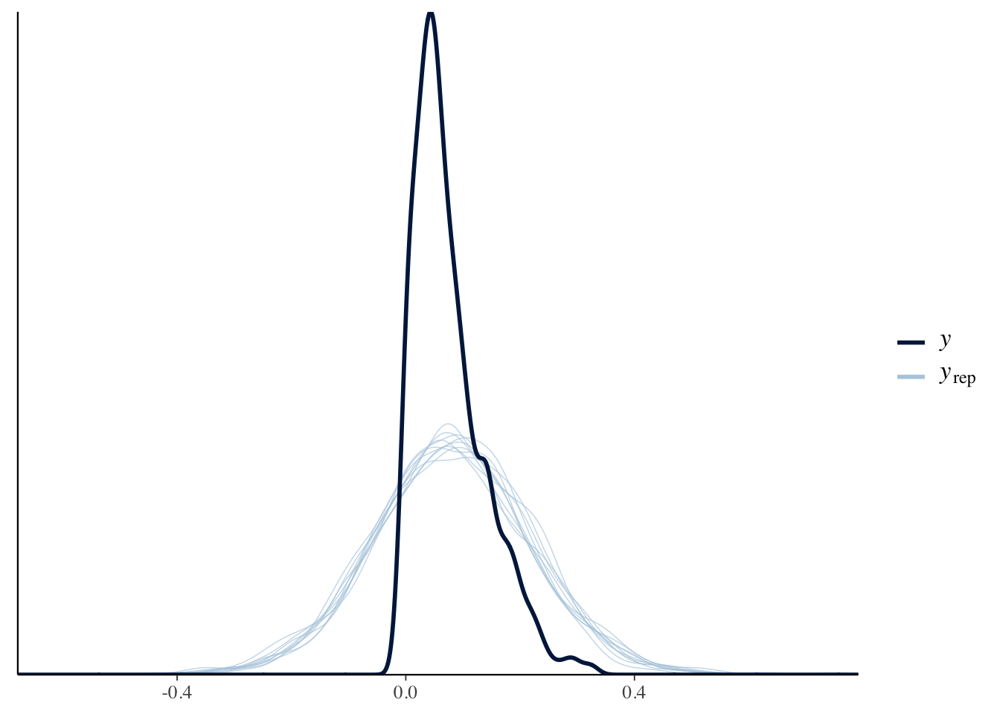
| Version | Author | Date |
|---|---|---|
| 8d22c48 | ausevo | 2022-05-16 |
Yep, not great! Need to think about this.
\(~\)
Which traits exhibit genetic variance explained by known SNPs?
Vg_female_plot <-
SNP_selection_response_estimates %>%
filter(Fitness_sex == "Female",
`Variance_V(G)_trait` < 1 & `Variance_V(G)_trait` > -1,
Reference != "Jin et al (2020) PLOS Genetics" &
Reference != "Everett et al (2020) Genome Research" &
Reference != "Dembeck et al (2015) eLife") %>%
mutate(Trait = fct_reorder(Trait, `Variance_V(G)_trait`)) %>%
ggplot(aes(x = `Variance_V(G)_trait`, y = Trait, xmin = `Variance_V(G)_trait` - `SE_V(G)_trait`, xmax = `Variance_V(G)_trait` + `SE_V(G)_trait`)) +
geom_pointinterval(aes(fill = `Variance_V(G)_trait`), shape = 21, point_size = 1.5, stroke = 1) +
scale_fill_gradientn(colors=met.brewer(direction = 1, "OKeeffe2"), guide = "none") +
geom_vline(xintercept = 0, linetype = 2) +
labs(x = expression(paste("SNP genetic variance", (V[A]))),
title = "Females") +
theme_minimal()
Vg_male_plot <-
SNP_selection_response_estimates %>%
filter(Fitness_sex == "Male",
`Variance_V(G)_trait` < 1 & `Variance_V(G)_trait` > -1,
Reference != "Jin et al (2020) PLOS Genetics" &
Reference != "Everett et al (2020) Genome Research" &
Reference != "Dembeck et al (2015) eLife") %>%
mutate(Trait = fct_reorder(Trait, `Variance_V(G)_trait`)) %>%
ggplot(aes(x = `Variance_V(G)_trait`, y = Trait, xmin = `Variance_V(G)_trait` - `SE_V(G)_trait`, xmax = `Variance_V(G)_trait` + `SE_V(G)_trait`)) +
geom_pointinterval(aes(fill = `Variance_V(G)_trait`), shape = 21, point_size = 1.5, stroke = 1) +
scale_fill_gradientn(colors=met.brewer(direction = 1, "OKeeffe2"), guide = "none") +
geom_vline(xintercept = 0, linetype = 2) +
labs(x = expression(paste("SNP genetic variance", (V[A]))),
title = "Males") +
theme_minimal()
Vg_female_plot + Vg_male_plot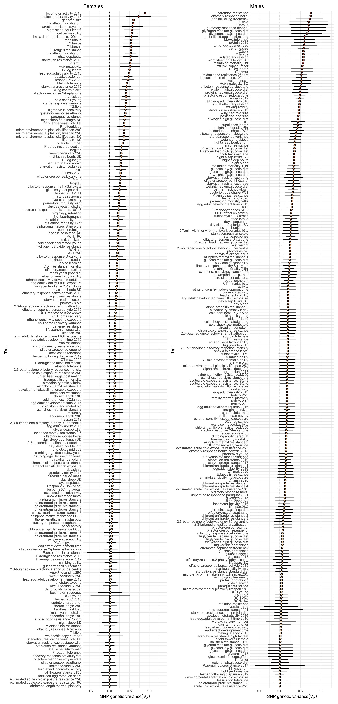
Does additive genetic variance differ between the sexes?
Exploratory plots
This plot shows the distribution of genetic and environmental variance in females and males. It is simply exploratory, as we do not account for the uncertainty around the point estimate for each trait here.
# Some wrangling required
a <- SNP_selection_response_estimates %>%
filter(Fitness_sex == "Male")
b <- SNP_selection_response_estimates %>%
filter(Fitness_sex == "Female")
# there are 304 traits for which we have measures in both sexes
SNP_both_sexes <- inner_join(a, b, by = "Trait")
add_var_data <-
SNP_both_sexes %>%
pivot_longer(cols = c(`Variance_V(G)_trait.x`, `Variance_V(G)_trait.y`), names_to = "Sex", values_to = "Additive_genetic_variance") %>%
mutate(Sex = if_else(str_ends(Sex, ".x"), "Male", "Female")) %>%
select(c(Trait, Sex, `Trait guild.x`, Additive_genetic_variance)) %>%
filter(Additive_genetic_variance < 1)
env_var_data <-
SNP_both_sexes %>%
pivot_longer(cols = c(`Variance_V(e)_trait.x`, `Variance_V(e)_trait.y`), names_to = "Sex", values_to = "Env_variance") %>%
mutate(Sex = if_else(str_ends(Sex, ".x"), "Male", "Female")) %>%
select(c(Trait, Sex, `Trait guild.x`, Env_variance))
#filter(Env_variance > -1 & Env_variance < 1) %>%# plotting
p1 <-
add_var_data %>%
ggplot(aes(x = Additive_genetic_variance)) +
#geom_histogram(fill = met.brewer("Hokusai2")[2]) +
stat_halfeye(fill = met.brewer("Hokusai2")[1]) +
#geom_vline(xintercept = Add_Median[1], linetype = 2) +
labs(y = "Number of traits",
x = "V(G) - the estimated additive genetic variance") +
theme_minimal() +
facet_wrap(~Sex)
p2 <-
env_var_data %>%
ggplot(aes(x = Env_variance)) +
#geom_histogram(fill = met.brewer("Hokusai2")[4]) +
stat_halfeye(fill = met.brewer("Hokusai2")[1]) +
#geom_vline(xintercept = median(env_var_data$Env_variance), linetype = 2) +
labs(y = "Number of traits",
x = "V(e) - the estimated environmental variance") +
theme_minimal() +
facet_wrap(~Sex)
p1 / p2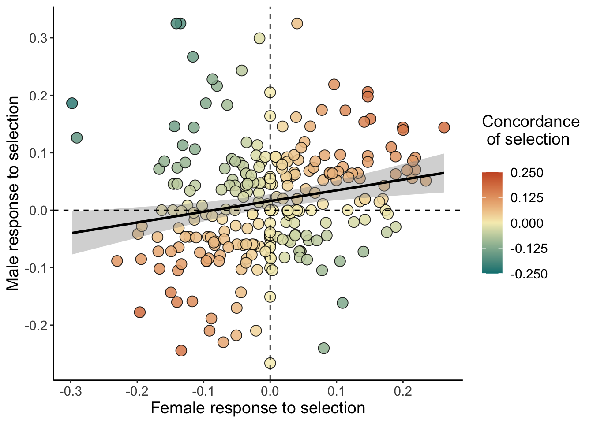
| Version | Author | Date |
|---|---|---|
| 8d22c48 | ausevo | 2022-05-16 |
From our GCTA analysis, we find that across traits measured in both sexes, environmental variance is ~three-fold larger than additive genetic variance explained by known SNPs. We also find that V(G) is highly zero-inflated (or 0.0001 inflated…). Whether this is a true effect or a result of an inability to estimate V(G) is unknown.
The plots suggest that males might have slightly higher V(G) than females, but that females have higher V(e).
\(~\)
Meta-analysis
To test whether V(G) is higher in males in females and that V(e) is higher in females than males, we conduct meta-analysis across all traits measured in both sexes.
We remove traits for which the Standard error is calculated as 0, as well as traits which have genetic variances greater than 1.
Note that I currently specify a Gaussian error distribution. This fits the data poorly.
met_additive_data <-
SNP_both_sexes %>%
select(Trait, `Trait guild.x`, Reference.x, `Variance_V(G)_trait.x`, `Variance_V(G)_trait.y`, `SE_V(G)_trait.x`, `SE_V(G)_trait.y`) %>%
pivot_longer(cols = c(`Variance_V(G)_trait.x`, `Variance_V(G)_trait.y`, ), names_to = "Sex", values_to = "Additive_genetic_variance") %>%
mutate(Sex = if_else(str_ends(Sex, ".x"), "Male", "Female"),
SE = if_else(Sex == "Male", `SE_V(G)_trait.x`, `SE_V(G)_trait.y`),
Trait = as.factor(Trait),
Trait_guild = as.factor(`Trait guild.x`),
Reference = as.factor(Reference.x),
Sex = as.factor(Sex)) %>%
select(-c(`SE_V(G)_trait.x`, `SE_V(G)_trait.y`, `Trait guild.x`, Reference.x)) %>%
filter(SE != 0, Additive_genetic_variance < 1) # note this filtering removes 5 traits
VG_model <-
brm(Additive_genetic_variance | se(SE) ~ 0 + Sex + (1|Trait) + (1|Reference),
family = gaussian(),
data = met_additive_data,
prior = c(prior(normal(0, 0.2), class = b),
prior(cauchy(0, 1), class = sd)),
warmup = 4000, iter = 6000,
seed = 1, cores = 4, chains = 4,
control = list(adapt_delta = 0.9),
file = "fits/VG.model")
# note that sigma is not estimated. This is normal for meta-analysis
print(VG_model) Family: gaussian
Links: mu = identity; sigma = identity
Formula: Additive_genetic_variance | se(SE) ~ 0 + Sex + (1 | Trait) + (1 | Reference)
Data: met_additive_data (Number of observations: 603)
Draws: 4 chains, each with iter = 6000; warmup = 4000; thin = 1;
total post-warmup draws = 8000
Group-Level Effects:
~Reference (Number of levels: 51)
Estimate Est.Error l-95% CI u-95% CI Rhat Bulk_ESS Tail_ESS
sd(Intercept) 0.08 0.02 0.05 0.11 1.00 2954 4948
~Trait (Number of levels: 304)
Estimate Est.Error l-95% CI u-95% CI Rhat Bulk_ESS Tail_ESS
sd(Intercept) 0.02 0.01 0.00 0.04 1.00 2389 3706
Population-Level Effects:
Estimate Est.Error l-95% CI u-95% CI Rhat Bulk_ESS Tail_ESS
SexFemale 0.20 0.02 0.17 0.23 1.00 4786 5451
SexMale 0.22 0.02 0.18 0.25 1.00 4869 5585
Family Specific Parameters:
Estimate Est.Error l-95% CI u-95% CI Rhat Bulk_ESS Tail_ESS
sigma 0.00 0.00 0.00 0.00 NA NA NA
Draws were sampled using sampling(NUTS). For each parameter, Bulk_ESS
and Tail_ESS are effective sample size measures, and Rhat is the potential
scale reduction factor on split chains (at convergence, Rhat = 1).Once again, a Gaussian model may not be a good fit for our data. Let’s check:
pp_check(VG_model)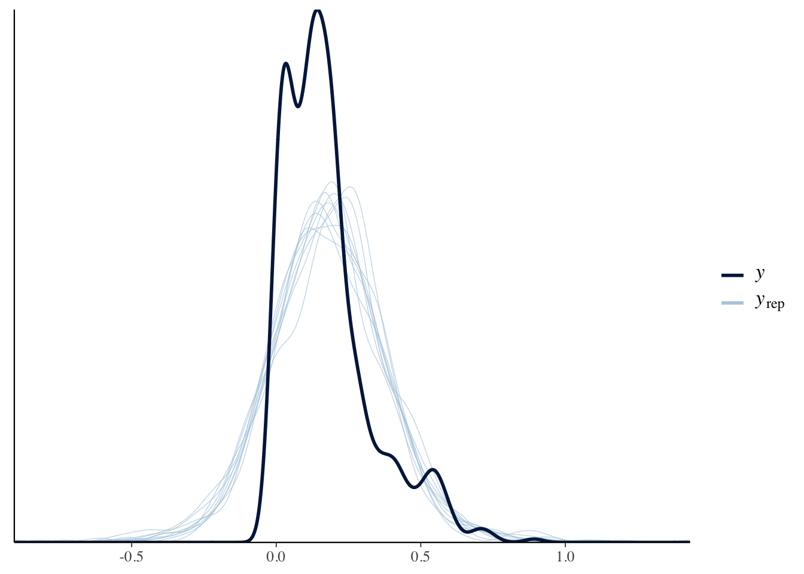
Yep, not great gain! Need to think about this.
Anyway, in the meantime, here’s the predictions from the model plotted as halfeyes:
Genetic_var_sex_plot <-
as_draws_df(VG_model) %>%
select(b_SexFemale, b_SexMale) %>%
rename(Female = b_SexFemale, Male = b_SexMale) %>%
pivot_longer(cols = 1:2, names_to = "Sex", values_to = "Genetic_variance") %>%
ggplot(aes(x = Genetic_variance, y = Sex)) +
stat_halfeye(point_interval = median_qi, .width = c(.5, .95),
slab_colour = "black", shape = 21, point_size = 3,
stroke = 1.5, point_fill = "white") +
labs(x = "Mean genetic variance",
y = "Sex") +
theme_bw()
Genetic_var_diff_plot <-
as_draws_df(VG_model) %>%
mutate(Sex_diff = b_SexFemale - b_SexMale) %>%
select(b_SexFemale, b_SexMale, Sex_diff) %>%
ggplot(aes(x = Sex_diff, y = 0, fill = stat(x > 0))) +
stat_halfeye(point_interval = median_qi, .width = c(.5, .95),
slab_colour = "black", shape = 21, point_size = 3,
stroke = 1.5, point_fill = "white") +
geom_vline(xintercept = 0, linetype = 2) +
labs(x = "Difference in genetic variance between traits\n expressed in females and males",
y = NULL) +
scale_y_continuous(NULL, breaks = NULL) +
scale_fill_manual(values = c("grey", met.brewer("Hokusai2")[2]), guide = "none") +
theme_bw()
Genetic_var_sex_plot + Genetic_var_diff_plot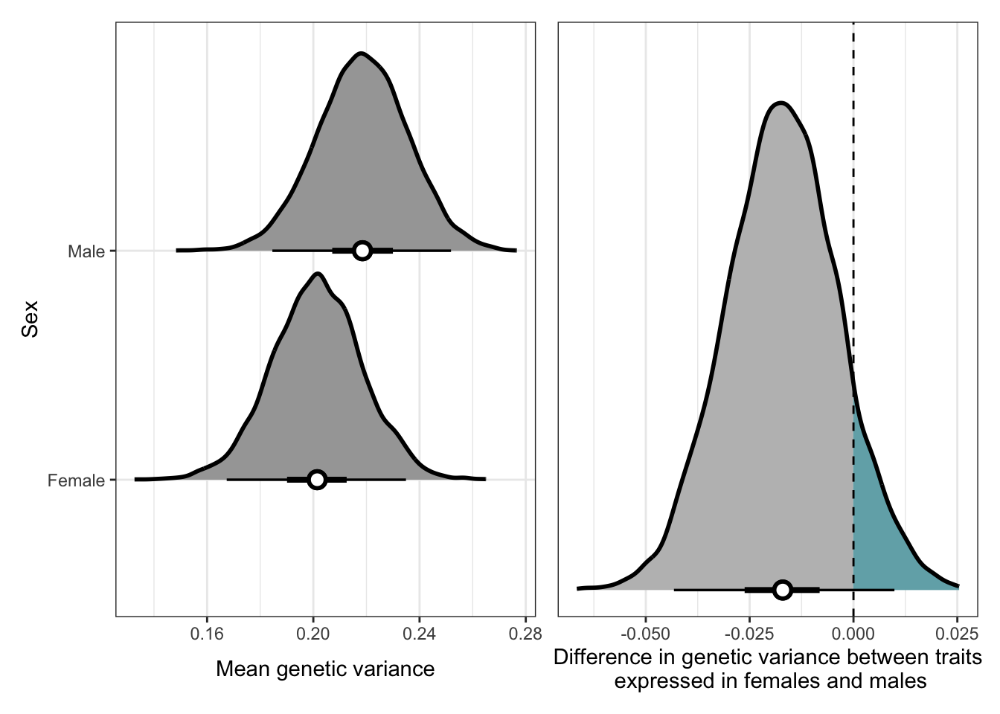
\(~\)
Which traits exhibit environmental variance not explained by known SNPs?
What I call environmental variance is really all residual variance that is not explained by the known set of SNPs in the DGRP. This includes all environmental and unmapped genetic explanations of variance e.g. unknown SNPs, regulatory effects, mtDNA and the genetic material of cytoplasmic endosympbionts (in some cases).
In theory this residual variance should be larger than the environmental variance used to find broad-sense heritability.
Ve_female_plot <-
SNP_selection_response_estimates %>%
filter(Fitness_sex == "Female",
`Variance_V(e)_trait` < 5 & `Variance_V(e)_trait` > -1,
Reference != "Jin et al (2020) PLOS Genetics" &
Reference != "Everett et al (2020) Genome Research" &
Reference != "Dembeck et al (2015) eLife") %>%
mutate(Trait = fct_reorder(Trait, `Variance_V(e)_trait`)) %>%
ggplot(aes(x = `Variance_V(e)_trait`, y = Trait, xmin = `Variance_V(e)_trait` - `SE_V(e)_trait`, xmax = `Variance_V(e)_trait` + `SE_V(e)_trait`)) +
geom_pointinterval(aes(fill = `Variance_V(e)_trait`), shape = 21, point_size = 1.5, stroke = 1) +
scale_fill_gradientn(colors=met.brewer(direction = 1, "OKeeffe2"), guide = "none") +
geom_vline(xintercept = 0, linetype = 2) +
labs(x = expression(paste("Environmental variance", (V[A]))),
title = "Females") +
theme_minimal()
Ve_male_plot <-
SNP_selection_response_estimates %>%
filter(Fitness_sex == "Male",
`Variance_V(e)_trait` < 5 & `Variance_V(e)_trait` > -1,
Reference != "Jin et al (2020) PLOS Genetics" &
Reference != "Everett et al (2020) Genome Research" &
Reference != "Dembeck et al (2015) eLife") %>%
mutate(Trait = fct_reorder(Trait, `Variance_V(e)_trait`)) %>%
ggplot(aes(x = `Variance_V(e)_trait`, y = Trait, xmin = `Variance_V(e)_trait` - `SE_V(e)_trait`, xmax = `Variance_V(e)_trait` + `SE_V(e)_trait`)) +
geom_pointinterval(aes(fill = `Variance_V(e)_trait`), shape = 21, point_size = 1.5, stroke = 1) +
scale_fill_gradientn(colors=met.brewer(direction = 1, "OKeeffe2"), guide = "none") +
geom_vline(xintercept = 0, linetype = 2) +
labs(x = expression(paste("Environmental variance", (V[A]))),
title = "Males") +
theme_minimal()
Ve_female_plot + Ve_male_plot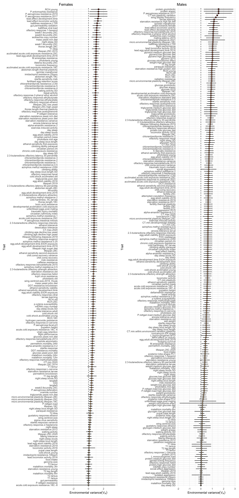
Does enviornmental variation differ between the sexes?
Meta-analysis
met_enviro_data <-
SNP_both_sexes %>%
select(Trait, `Trait guild.x`, Reference.x, `Variance_V(e)_trait.x`, `Variance_V(e)_trait.y`, `SE_V(e)_trait.x`, `SE_V(e)_trait.y`) %>%
pivot_longer(cols = c(`Variance_V(e)_trait.x`, `Variance_V(e)_trait.y`, ), names_to = "Sex", values_to = "Environmental_variance") %>%
mutate(Sex = if_else(str_ends(Sex, ".x"), "Male", "Female"),
SE = if_else(Sex == "Male", `SE_V(e)_trait.x`, `SE_V(e)_trait.y`),
Trait = as.factor(Trait),
Trait_guild = as.factor(`Trait guild.x`),
Reference = as.factor(Reference.x),
Sex = as.factor(Sex)) %>%
select(-c(`SE_V(e)_trait.x`, `SE_V(e)_trait.y`, `Trait guild.x`, Reference.x)) %>%
filter(SE != 0)
Ve_model <-
brm(Environmental_variance | se(SE) ~ 0 + Sex + (1|Trait) + (1|Reference),
family = gaussian(),
data = met_enviro_data,
prior = c(prior(normal(0, 0.2), class = b),
prior(cauchy(0, 1), class = sd)),
warmup = 4000, iter = 6000,
seed = 1, cores = 4, chains = 4,
control = list(adapt_delta = 0.9),
file = "fits/Ve.model")
print(Ve_model) Family: gaussian
Links: mu = identity; sigma = identity
Formula: Environmental_variance | se(SE) ~ 0 + Sex + (1 | Trait) + (1 | Reference)
Data: met_enviro_data (Number of observations: 604)
Draws: 4 chains, each with iter = 6000; warmup = 4000; thin = 1;
total post-warmup draws = 8000
Group-Level Effects:
~Reference (Number of levels: 51)
Estimate Est.Error l-95% CI u-95% CI Rhat Bulk_ESS Tail_ESS
sd(Intercept) 0.14 0.03 0.09 0.21 1.00 2516 3720
~Trait (Number of levels: 304)
Estimate Est.Error l-95% CI u-95% CI Rhat Bulk_ESS Tail_ESS
sd(Intercept) 0.11 0.02 0.07 0.15 1.00 3055 4785
Population-Level Effects:
Estimate Est.Error l-95% CI u-95% CI Rhat Bulk_ESS Tail_ESS
SexFemale 0.53 0.03 0.47 0.60 1.00 3437 4769
SexMale 0.50 0.03 0.44 0.57 1.00 3403 4703
Family Specific Parameters:
Estimate Est.Error l-95% CI u-95% CI Rhat Bulk_ESS Tail_ESS
sigma 0.00 0.00 0.00 0.00 NA NA NA
Draws were sampled using sampling(NUTS). For each parameter, Bulk_ESS
and Tail_ESS are effective sample size measures, and Rhat is the potential
scale reduction factor on split chains (at convergence, Rhat = 1).Check the fit
pp_check(Ve_model)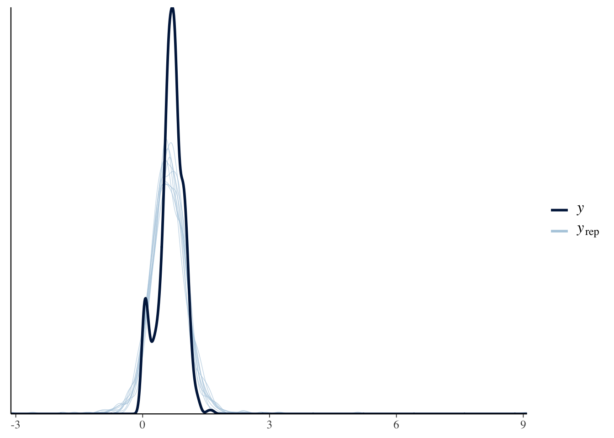
As with all the meta-models, we need to find a distribution that precludes negative values for variances.
Plot the predictions:
Env_var_sex_plot <-
as_draws_df(Ve_model) %>%
select(b_SexFemale, b_SexMale) %>%
rename(Female = b_SexFemale, Male = b_SexMale) %>%
pivot_longer(cols = 1:2, names_to = "Sex", values_to = "Environmental_variance") %>%
ggplot(aes(x = Environmental_variance, y = Sex)) +
stat_halfeye(point_interval = median_qi, .width = c(.5, .95),
slab_colour = "black", shape = 21, point_size = 3,
stroke = 1.5, point_fill = "white") +
labs(x = "Mean environmental (residual) variance",
y = "Sex") +
theme_bw()
Env_var_diff_plot <-
as_draws_df(Ve_model) %>%
mutate(Sex_diff = b_SexFemale - b_SexMale) %>%
select(b_SexFemale, b_SexMale, Sex_diff) %>%
ggplot(aes(x = Sex_diff, y = 0, fill = stat(x > 0))) +
stat_halfeye(point_interval = median_qi, .width = c(.5, .95),
slab_colour = "black", shape = 21, point_size = 3,
stroke = 1.5, point_fill = "white") +
geom_vline(xintercept = 0, linetype = 2) +
labs(x = "Difference in environmental variance between traits\n expressed in females and males",
y = NULL) +
scale_y_continuous(NULL, breaks = NULL) +
scale_fill_manual(values = c("grey", met.brewer("Hokusai2")[2]), guide = "none") +
theme_bw()
Env_var_sex_plot + Env_var_diff_plot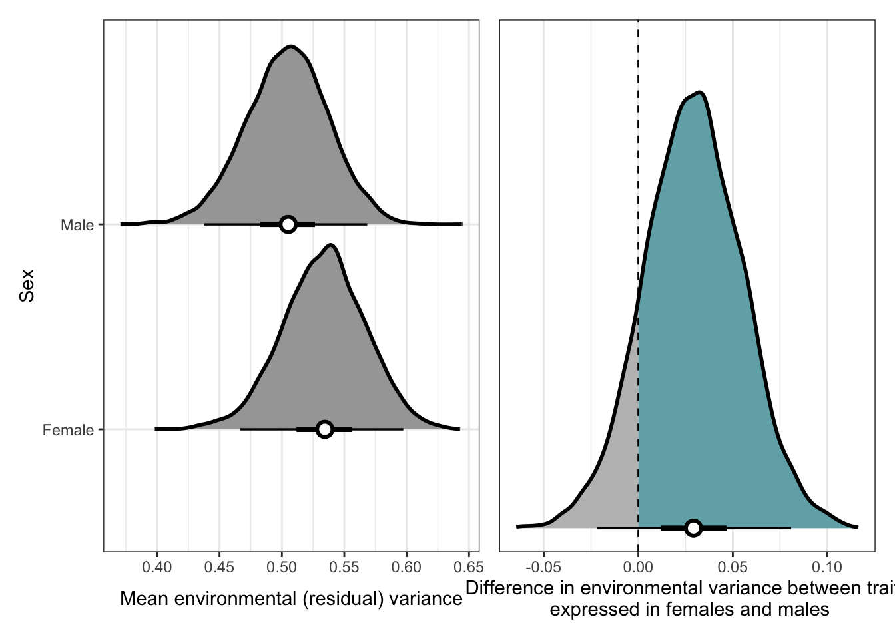
We detect no differences in genetic or environmental variance between the sexes.
\(~\)
Testing general predictions of Fisher’s theorem
\(~\)
1. Do traits correlated with fitness have lower additive genetic variance?
Following Fisher’s theorem and assuming a constant environment, in the absence of new variation, selection is expected to erode all additive genetic variation for fitness. One implication of this expectation is that traits that are correlated with fitness should show reduced additive genetic variance relative to those that are not correlated with fitness (Robertson 1955b).
There are previous studies that have compared fitness related traits i.e. those implicated with reproduction, with morphological traits, which are assumed to have lesser relationships with fitness.
The problem is associating these traits with _lifetime) fitness. This shouldn’t be such a problem for us…
Multiple studies looking at this corollary use phenotypic correlations with fitness rather than genetic. Once again, this is no problem for us…
Even if there is lots of additive genetic variance for a trait and it is correlated with fitness, if fitness has a high environmental variance component the strength of selection on the trait will be weak.
Houle (1992) looks like an important meta-analysis type work
Note that heritability can also decline with an increase in environmental variance and no decrease (or an increase) in genetic variance. If true, this makes a simple regression with heritability and fitness misleading.
Using evolvability as his metric, Houle (1992) found that characters assumed to be closely related to fitness have higher evolvabilities than do trait with looser relationships to fitness. This suggests that the negative relationship between fitness and heritability is due to increased environmental variance in fitness related traits, not a decrease in additive genetic variance.
Rz_VG_plot <-
SNP_selection_response_estimates %>%
filter(`Variance_C(G)_tr12` > -1 & `Variance_V(G)_trait` > -1 & `Variance_C(G)_tr12` < 1 & `Variance_V(G)_trait` < 1) %>%
#`Trait guild` != "Metabolome" & `Trait guild` != "CHC", `Trait guild` != "Microbiome") %>%
mutate(`Variance_C(G)_tr12` = abs(`Variance_C(G)_tr12`)) %>%
ggplot(aes(y = `Variance_C(G)_tr12`, x = `Variance_V(G)_trait`, fill = Fitness_sex)) +
#geom_hex()
geom_point(shape = 21, size = 3, alpha = 0.5) +
geom_smooth(aes(colour = Fitness_sex)) +
scale_fill_manual(values = met.brewer("Hokusai3", 2), guide = "none") +
scale_colour_manual(values = met.brewer("Hokusai3", 2), guide = "none") +
labs(y = expression(paste("Selection response ", (R[z]))),
x = expression(paste("SNP genetic variance ", (V[A]))),
fill = "Sex") +
theme_bw()
Rz_VG_plot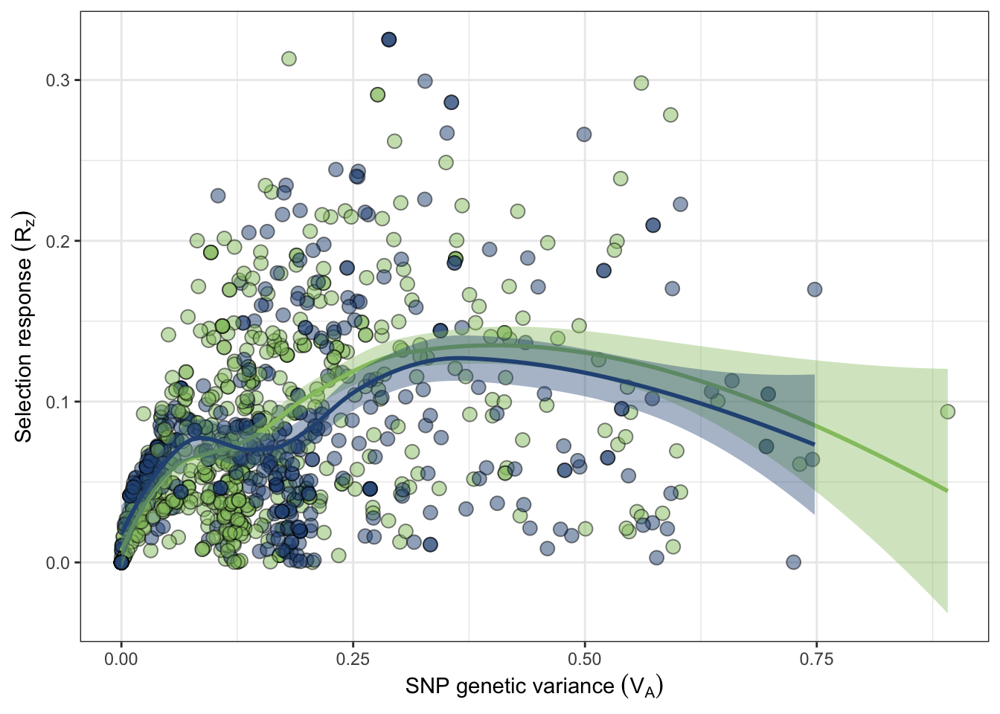
Figure X: The SNP-covariance between fitness and trait (Robertson covariance) is positively correlated with additive genetic variance. The Robertson covariance, or the secondary theorem of natural selection, \(R_z\) estimates the expected response to selection of a trait.
Ok so I don’t think we’re learning much here. This is very much the expected result, given additive genetic variance is the fuel for a selection response.
\(~\)
2. Do traits correlated with fitness have higher levels of residual variance?
Rz_Ve_plot <-
SNP_selection_response_estimates %>%
filter(`Variance_C(G)_tr12` > -1 & `Variance_V(e)_trait` > -1 & `Variance_C(G)_tr12` < 1 & `Variance_V(e)_trait` < 5) %>%
#`Trait guild` != "Metabolome" & `Trait guild` != "CHC", `Trait guild` != "Microbiome") %>%
mutate(`Variance_C(G)_tr12` = abs(`Variance_C(G)_tr12`)) %>%
ggplot(aes(x = `Variance_C(G)_tr12`, y = `Variance_V(e)_trait`, fill = Fitness_sex)) +
#geom_hex()
geom_point(shape = 21, size = 3, alpha = 0.5) +
geom_smooth(aes(colour = Fitness_sex)) +
scale_fill_manual(values = met.brewer("Hokusai3", 2), guide = "none") +
scale_colour_manual(values = met.brewer("Hokusai3", 2), guide = "none") +
labs(y = expression(paste("Selection response ", (R[z]))),
x = expression(paste("Environmental variance ", (V[A]))),
fill = "Sex") +
theme_bw()
Rz_Ve_plot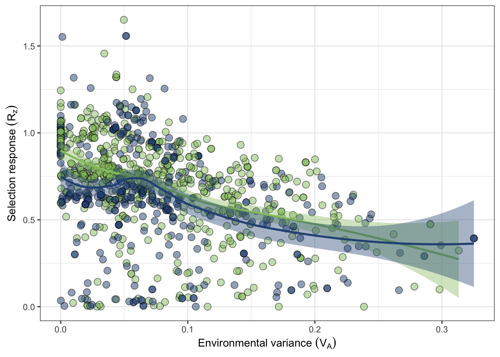
Figure X: The SNP-covariance between fitness and trait (Robertson covariance) is negatively correlated with environmental variance underlying the trait. The Robertson covariance, or the secondary theorem of natural selection, \(R_z\) estimates the expected response to selection of a trait.
\(~\)
Sexually antagonistic selection
\(~\)
Using the Robertson covariance We have found th expected responses to selection for many traits in females and males. For those traits where we have a measure of both, we can quantify sexually antagonistic selection by finding traits that have selection operating in opposite directions, depending on which sex the trait is expressed in.
Innocenti and Morrow (2011) present an index for measuring the intensity for sexually antagonistic selection:
\(I = \frac{\beta_M \beta_F}{\sqrt{(\beta_M^{2} + \beta_F^{2})/2}}\)
Where \(B_F\) and \(B_M\) are the standardised selection gradients for females and males respectively.
From Innocenti and Morrow:
This index is positive when selection is concordant in the two sexes, negative when antagonistic in the two sexes, and is zero when selection is absent in one sex (note that it will miss conflict that occurs when strong stabilizing selection is present in that sex). Finally it is proportional to the absolute intensity of selection.
Additionally, it has the desirable properties of being symmetrical and normally distributed for a random set of normally distributed \(B_F\), \(B_M\). |I| is also always included in the interval between the absolute values of the selection gradient in the two sexes, and it coincides with them when \(B_F\) = \(B_M\). As a potential drawback, it should be noted that such quantity is not defined when \(B_F\) = \(B_M\) = 0, even though it makes little sense to estimate how concordant or antagonistic directional selection is when it is absent in both sexes.
Unfortunately, we do not have selection differentials / gradients. Instead, we have the potentially more powerful expected response to selection for many traits in both sexes.
\(~\)
# create our sexual antagonism tibble by joining the female and male tibbles by traits they both share
SNP_antagonism <- SNP_both_sexes %>%
rename(Trait_covariance_male_fitness = `Variance_C(G)_tr12.x`,
Trait_covariance_female_fitness = `Variance_C(G)_tr12.y`) %>%
select(-c(Fitness_sex.x, Fitness_sex.y)) %>%
# calculate the innocenti and morrow index
mutate(Selection_index = Trait_covariance_female_fitness * Trait_covariance_male_fitness / sqrt(((Trait_covariance_female_fitness)^2 + (Trait_covariance_male_fitness)^2)/2)) %>%
# get rid of traits with unrealistic covariances
filter(Trait_covariance_male_fitness > -5,
Trait_covariance_female_fitness < 2 & Trait_covariance_female_fitness > -5)
# plot the data
sexual_concordance_plot <-
ggplot(data = SNP_antagonism, aes(x = Trait_covariance_female_fitness, y = Trait_covariance_male_fitness, fill = Selection_index)) +
#geom_errorbar(aes(ymin = Trait_covariance_male_fitness - `SE_C(G)_tr12.x`, ymax = Trait_covariance_male_fitness + `SE_C(G)_tr12.x`),
# width = 0.01, colour = "grey11", alpha = 0.8) +
#geom_errorbarh(aes(xmin = Trait_covariance_female_fitness - `SE_C(G)_tr12.y`, xmax = Trait_covariance_female_fitness + `SE_C(G)_tr12.y`),
# colour = "grey11", alpha = 0.8, height = 0.01) +
geom_point(shape = 21, alpha = 1, size = 4, show.legend = TRUE) +
geom_smooth(method = 'lm', color='black') +
geom_hline(yintercept = 0, linetype = 2) +
geom_vline(xintercept = 0, linetype = 2) +
#coord_cartesian(xlim = c(-0.35, 0.35), ylim = c(-0.4, 0.4)) +
scale_fill_carto_c(palette = "Geyser",
breaks=c(-0.25, -0.125, 0, 0.125, 0.25),
limits=c(-0.25,0.25)) +
labs(x = "Female response to selection",
y = "Male response to selection",
fill = "Concordance\n of selection\n") +
theme_bw() +
theme(panel.border= element_blank(),
axis.line=element_line(),
text = element_text(size=14),
panel.grid.major.x = element_blank(),
panel.grid.major.y = element_blank(),
panel.grid.minor.y = element_blank(),
panel.grid.minor.x = element_blank(),
axis.title.x = element_text(size = 14),
axis.title.y = element_text(size = 14))
sexual_concordance_plot
Figure X:
sessionInfo()R version 4.1.0 (2021-05-18)
Platform: x86_64-apple-darwin17.0 (64-bit)
Running under: macOS Big Sur 10.16
Matrix products: default
BLAS: /Library/Frameworks/R.framework/Versions/4.1/Resources/lib/libRblas.dylib
LAPACK: /Library/Frameworks/R.framework/Versions/4.1/Resources/lib/libRlapack.dylib
locale:
[1] en_AU.UTF-8/en_AU.UTF-8/en_AU.UTF-8/C/en_AU.UTF-8/en_AU.UTF-8
attached base packages:
[1] stats graphics grDevices utils datasets methods base
other attached packages:
[1] tidybayes_3.0.2 brms_2.17.0 Rcpp_1.0.8.3 ggbeeswarm_0.6.0
[5] rcartocolor_2.0.0 patchwork_1.1.1 MetBrewer_0.2.0 DT_0.22
[9] kableExtra_1.3.4 glue_1.6.2 forcats_0.5.1 stringr_1.4.0
[13] dplyr_1.0.8 purrr_0.3.4 readr_2.1.2 tidyr_1.2.0
[17] tibble_3.1.6 ggplot2_3.3.5 tidyverse_1.3.1 workflowr_1.7.0
loaded via a namespace (and not attached):
[1] readxl_1.4.0 backports_1.4.1 systemfonts_1.0.4
[4] plyr_1.8.7 igraph_1.3.1 svUnit_1.0.6
[7] splines_4.1.0 crosstalk_1.2.0 TH.data_1.1-0
[10] rstantools_2.2.0 inline_0.3.19 digest_0.6.29
[13] htmltools_0.5.2 fansi_1.0.3 magrittr_2.0.3
[16] checkmate_2.1.0 tzdb_0.3.0 modelr_0.1.8
[19] RcppParallel_5.1.5 matrixStats_0.62.0 vroom_1.5.7
[22] xts_0.12.1 sandwich_3.0-1 svglite_2.1.0
[25] prettyunits_1.1.1 colorspace_2.0-3 rvest_1.0.2
[28] ggdist_3.1.1 haven_2.5.0 xfun_0.30
[31] callr_3.7.0 crayon_1.5.1 jsonlite_1.8.0
[34] lme4_1.1-29 survival_3.3-1 zoo_1.8-10
[37] gtable_0.3.0 emmeans_1.7.3 webshot_0.5.3
[40] distributional_0.3.0 pkgbuild_1.3.1 rstan_2.21.5
[43] abind_1.4-5 scales_1.2.0 mvtnorm_1.1-3
[46] DBI_1.1.2 miniUI_0.1.1.1 viridisLite_0.4.0
[49] xtable_1.8-4 diffobj_0.3.5 bit_4.0.4
[52] stats4_4.1.0 StanHeaders_2.21.0-7 htmlwidgets_1.5.4
[55] httr_1.4.2 threejs_0.3.3 arrayhelpers_1.1-0
[58] posterior_1.2.1 ellipsis_0.3.2 pkgconfig_2.0.3
[61] loo_2.5.1 farver_2.1.0 sass_0.4.1
[64] dbplyr_2.1.1 utf8_1.2.2 labeling_0.4.2
[67] tidyselect_1.1.2 rlang_1.0.2 reshape2_1.4.4
[70] later_1.3.0 munsell_0.5.0 cellranger_1.1.0
[73] tools_4.1.0 cli_3.2.0 generics_0.1.2
[76] broom_0.8.0 ggridges_0.5.3 evaluate_0.15
[79] fastmap_1.1.0 yaml_2.3.5 bit64_4.0.5
[82] processx_3.5.3 knitr_1.38 fs_1.5.2
[85] nlme_3.1-157 projpred_2.1.1 whisker_0.4
[88] mime_0.12 xml2_1.3.3 compiler_4.1.0
[91] bayesplot_1.9.0 shinythemes_1.2.0 rstudioapi_0.13
[94] gamm4_0.2-6 beeswarm_0.4.0 reprex_2.0.1
[97] bslib_0.3.1 stringi_1.7.6 highr_0.9
[100] ps_1.7.0 Brobdingnag_1.2-7 lattice_0.20-45
[103] Matrix_1.4-1 nloptr_2.0.0 markdown_1.1
[106] shinyjs_2.1.0 tensorA_0.36.2 vctrs_0.4.1
[109] pillar_1.7.0 lifecycle_1.0.1 jquerylib_0.1.4
[112] bridgesampling_1.1-2 estimability_1.3 httpuv_1.6.5
[115] R6_2.5.1 promises_1.2.0.1 gridExtra_2.3
[118] vipor_0.4.5 codetools_0.2-18 boot_1.3-28
[121] MASS_7.3-57 colourpicker_1.1.1 gtools_3.9.2
[124] assertthat_0.2.1 rprojroot_2.0.3 withr_2.5.0
[127] shinystan_2.6.0 multcomp_1.4-18 mgcv_1.8-40
[130] parallel_4.1.0 hms_1.1.1 grid_4.1.0
[133] minqa_1.2.4 coda_0.19-4 rmarkdown_2.13
[136] git2r_0.30.1 getPass_0.2-2 shiny_1.7.1
[139] lubridate_1.8.0 base64enc_0.1-3 dygraphs_1.1.1.6